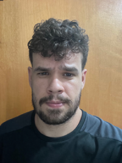

Gerencio as demandas do setor de Editoração, recebendo, distribuindo e coordenando prazos com a equipe. Sou o elo de comunicação e alinhamento com outras unidades e a coordenação da Escola, assegurando a logística precisa no envio dos materiais desenvolvidos. Além disso, faço a criação de materias didáticos para o Ensino Infantil, garantindo que os recursos visuais e o conteúdo sejam adequados ao nível de compreensão e interesse dos alunos mais jovens.
Alocado no RH da empresa, atuou no planejamento e execução de campanhas estratégicas para aumentar o engajamento dos colaboradores, proporcionando ações de bem-estar, visando assim melhorar a produtividade e a redução do turnover. Contribuiu na administração orçamentária do setor; aplicou conhecimentos em gestão de demandas para assegurar a eficiência operacional. Desenvolvimento e gerenciamento de relatórios detalhados utilizando Excel, proporcionando insights estratégicos para tomada de decisão.
Responsável pelos conteúdos dos clientes da Agência Le Pera, teve a oportunidade de trabalhar com uma ampla gama de marcas de diferentes setores, incluindo tecnologia, bem-estar, beleza, varejo e terceiro setor. As principais responsabilidades incluíam escrever copy persuasivo para anúncios no Facebook e no Google, criar e-mails marketing com foco de aumento das taxas de abertura e conversão, produzir posts de blog informativos e otimizados para SEO e organizar conteúdo para páginas nas redes sociais. Além disso, encarregado de criar roteiros de vídeo, guias de instruções e etc.